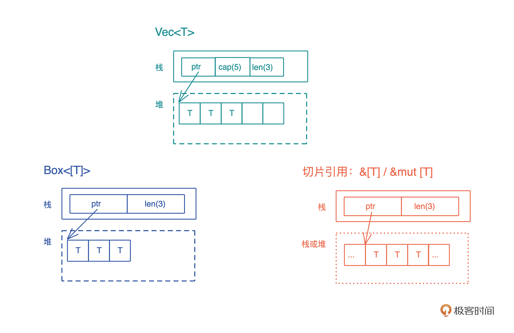

- 00 开篇词 让Rust成为你的下一门主力语言.md
- 01 内存：值放堆上还是放栈上，这是一个问题.md
- 02 串讲：编程开发中，那些你需要掌握的基本概念.md
- 03 初窥门径：从你的第一个Rust程序开始！.md
- 04 get hands dirty：来写个实用的CLI小工具.md
- 05 get hands dirty：做一个图片服务器有多难？.md
- 06 get hands dirty：SQL查询工具怎么一鱼多吃？.md
- 07 所有权：值的生杀大权到底在谁手上？.md
- 08 所有权：值的借用是如何工作的？.md
- 09 所有权：一个值可以有多个所有者么？.md
- 10 生命周期：你创建的值究竟能活多久？.md
- 11 内存管理：从创建到消亡，值都经历了什么？.md
- 12 类型系统：Rust的类型系统有什么特点？.md
- 13 类型系统：如何使用trait来定义接口？.md
- 14 类型系统：有哪些必须掌握的trait？.md
- 15 数据结构：这些浓眉大眼的结构竟然都是智能指针？.md
- 16 数据结构：Vec_T_、&[T]、Box_[T]_ ，你真的了解集合容器么？.md
- 17 数据结构：软件系统核心部件哈希表，内存如何布局？.md
- 18 错误处理：为什么Rust的错误处理与众不同？.md
- 19 闭包：FnOnce、FnMut和Fn，为什么有这么多类型？.md
- 20 4 Steps ：如何更好地阅读Rust源码？.md
- 21 阶段实操（1）：构建一个简单的KV server-基本流程.md
- 22 阶段实操（2）：构建一个简单的KV server-基本流程.md
- 23 类型系统：如何在实战中使用泛型编程？.md
- 24 类型系统：如何在实战中使用trait object？.md
- 25 类型系统：如何围绕trait来设计和架构系统？.md
- 26 阶段实操（3）：构建一个简单的KV server-高级trait技巧.md
- 27 生态系统：有哪些常有的Rust库可以为我所用？.md
- 28 网络开发（上）：如何使用Rust处理网络请求？.md
- 29 网络开发（下）：如何使用Rust处理网络请求？.md
- 30 Unsafe Rust：如何用C++的方式打开Rust？.md
- 31 FFI：Rust如何和你的语言架起沟通桥梁？.md
- 32 实操项目：使用PyO3开发Python3模块.md
- 33 并发处理（上）：从atomics到Channel，Rust都提供了什么工具？.md
- 34 并发处理（下）：从atomics到Channel，Rust都提供了什么工具？.md
- 35 实操项目：如何实现一个基本的MPSC channel？.md
- 36 阶段实操（4）：构建一个简单的KV server-网络处理.md
- 37 阶段实操（5）：构建一个简单的KV server-网络安全.md
- 38 异步处理：Future是什么？它和async_await是什么关系？.md
- 39 异步处理：async_await内部是怎么实现的？.md
- 40 异步处理：如何处理异步IO？.md
- 41 阶段实操（6）：构建一个简单的KV server-异步处理.md
- 42 阶段实操（7）：构建一个简单的KV server-如何做大的重构？.md
- 43 生产环境：真实世界下的一个Rust项目包含哪些要素？.md
- 44 数据处理：应用程序和数据如何打交道？.md
- 45 阶段实操（8）：构建一个简单的KV server-配置_测试_监控_CI_CD.md
- 46 软件架构：如何用Rust架构复杂系统？.md
- 加餐 Rust2021版次问世了！.md
- 加餐 代码即数据：为什么我们需要宏编程能力？.md
- 加餐 宏编程（上）：用最“笨”的方式撰写宏.md
- 加餐 宏编程（下）：用 syn_quote 优雅地构建宏.md
- 加餐 愚昧之巅：你的Rust学习常见问题汇总.md
- 加餐 期中测试：参考实现讲解.md
- 加餐 期中测试：来写一个简单的grep命令行.md
- 加餐 这个专栏你可以怎么学，以及Rust是否值得学？.md
- 大咖助场 开悟之坡（上）：Rust的现状、机遇与挑战.md
- 大咖助场 开悟之坡（下）：Rust的现状、机遇与挑战.md
- 特别策划 学习锦囊（一）：听听课代表们怎么说.md
- 特别策划 学习锦囊（三）：听听课代表们怎么说.md
- 特别策划 学习锦囊（二）：听听课代表们怎么说.md
- 用户故事 绝望之谷：改变从学习开始.md
- 用户故事 语言不仅是工具，还是思维方式.md
- 结束语 永续之原：Rust学习，如何持续精进？.md
16 数据结构：Vec_T_、&[T]、Box_[T]_ ，你真的了解集合容器么？
16｜数据结构：Vec
你好，我是陈天。今天来学集合容器。
现在我们接触到了越来越多的数据结构，我把 Rust 中主要的数据结构从原生类型、容器类型和系统相关类型几个维度整理一下，你可以数数自己掌握了哪些。-
 -
可以看到，容器占据了数据结构的半壁江山。
-
可以看到，容器占据了数据结构的半壁江山。
提到容器，很可能你首先会想到的就是数组、列表这些可以遍历的容器，但其实只要把某种特定的数据封装在某个数据结构中，这个数据结构就是一个容器。比如 Option
对于容器的两小类，到目前为止，像 Cow 这样，为特定目的而产生的容器我们已经介绍了不少，包括 Box、Rc、Arc、RefCell、还没讲到的 Option 和 Result 等。
今天我们来详细讲讲另一类，集合容器。
集合容器
集合容器，顾名思义，就是把一系列拥有相同类型的数据放在一起，统一处理，比如：
- 我们熟悉的字符串 String、数组 [T; n]、列表 Vec
和哈希表 HashMap<K, V>等； - 虽然到处在使用，但还并不熟悉的切片 slice；
- 在其他语言中使用过，但在 Rust 中还没有用过的循环缓冲区 VecDeque
、双向列表 LinkedList 等。
这些集合容器有很多共性，比如可以被遍历、可以进行 map-reduce 操作、可以从一种类型转换成另一种类型等等。
我们会选取两类典型的集合容器：切片和哈希表，深入解读，理解了这两类容器，其它的集合容器设计思路都差不多，并不难学习。今天先介绍切片以及和切片相关的容器，下一讲我们学习哈希表。
切片究竟是什么？
在 Rust 里，切片是描述一组属于同一类型、长度不确定的、在内存中连续存放的数据结构，用 [T] 来表述。因为长度不确定，所以切片是个 DST（Dynamically Sized Type）。
切片一般只出现在数据结构的定义中，不能直接访问，在使用中主要用以下形式：
- &[T]：表示一个只读的切片引用。
- &mut [T]：表示一个可写的切片引用。
- Box<[T]>：一个在堆上分配的切片。
怎么理解切片呢？我打个比方，切片之于具体的数据结构，就像数据库中的视图之于表。你可以把它看成一种工具，让我们可以统一访问行为相同、结构类似但有些许差异的类型。
来看下面的代码，辅助理解：
fn main() {
let arr = [1, 2, 3, 4, 5];
let vec = vec![1, 2, 3, 4, 5];
let s1 = &arr[..2];
let s2 = &vec[..2];
println!("s1: {:?}, s2: {:?}", s1, s2);
// &[T] 和 &[T] 是否相等取决于长度和内容是否相等
assert_eq!(s1, s2);
// &[T] 可以和 Vec<T>/[T;n] 比较，也会看长度和内容
assert_eq!(&arr[..], vec);
assert_eq!(&vec[..], arr);
}
对于 array 和 vector，虽然是不同的数据结构，一个放在栈上，一个放在堆上，但它们的切片是类似的；而且对于相同内容数据的相同切片，比如 &arr[1…3] 和 &vec[1…3]，这两者是等价的。除此之外，切片和对应的数据结构也可以直接比较，这是因为它们之间实现了 PartialEq trait（源码参考资料）。
下图比较清晰地呈现了切片和数据之间的关系：
另外在 Rust 下，切片日常中都是使用引用 &[T]，所以很多同学容易搞不清楚 &[T] 和 &Vec
在使用的时候，支持切片的具体数据类型，你可以根据需要，解引用转换成切片类型。比如 Vec
use std::fmt;
fn main() {
let v = vec![1, 2, 3, 4];
// Vec 实现了 Deref，&Vec<T> 会被自动解引用为 &[T]，符合接口定义
print_slice(&v);
// 直接是 &[T]，符合接口定义
print_slice(&v[..]);
// &Vec<T> 支持 AsRef<[T]>
print_slice1(&v);
// &[T] 支持 AsRef<[T]>
print_slice1(&v[..]);
// Vec<T> 也支持 AsRef<[T]>
print_slice1(v);
let arr = [1, 2, 3, 4];
// 数组虽没有实现 Deref，但它的解引用就是 &[T]
print_slice(&arr);
print_slice(&arr[..]);
print_slice1(&arr);
print_slice1(&arr[..]);
print_slice1(arr);
}
// 注意下面的泛型函数的使用
fn print_slice<T: fmt::Debug>(s: &[T]) {
println!("{:?}", s);
}
fn print_slice1<T, U>(s: T)
where
T: AsRef<[U]>,
U: fmt::Debug,
{
println!("{:?}", s.as_ref());
}
这也就意味着，通过解引用，这几个和切片有关的数据结构都会获得切片的所有能力，包括：binary_search、chunks、concat、contains、start_with、end_with、group_by、iter、join、sort、split、swap 等一系列丰富的功能，感兴趣的同学可以看切片的文档。
切片和迭代器 Iterator
迭代器可以说是切片的孪生兄弟。切片是集合数据的视图，而迭代器定义了对集合数据的各种各样的访问操作。
通过切片的 iter() 方法，我们可以生成一个迭代器，对切片进行迭代。
在[第12讲]Rust类型推导已经见过了 iterator trait（用 collect 方法把过滤出来的数据形成新列表）。iterator trait 有大量的方法，但绝大多数情况下，我们只需要定义它的关联类型 Item 和 next() 方法。
-
Item 定义了每次我们从迭代器中取出的数据类型；
-
next() 是从迭代器里取下一个值的方法。当一个迭代器的 next() 方法返回 None 时，表明迭代器中没有数据了。
#[must_use = "iterators are lazy and do nothing unless consumed"] pub trait Iterator { type Item; fn next(&mut self) -> OptionSelf::Item; // 大量缺省的方法，包括 size_hint, count, chain, zip, map, // filter, for_each, skip, take_while, flat_map, flatten // collect, partition 等 ... }
看一个例子，对 Vec
fn main() {
// 这里 Vec<T> 在调用 iter() 时被解引用成 &[T]，所以可以访问 iter()
let result = vec![1, 2, 3, 4]
.iter()
.map(|v| v * v)
.filter(|v| *v < 16)
.take(1)
.collect::<Vec<_>>();
println!("{:?}", result);
}
需要注意的是 Rust 下的迭代器是个懒接口（lazy interface），也就是说这段代码直到运行到 collect 时才真正开始执行，之前的部分不过是在不断地生成新的结构，来累积处理逻辑而已。你可能好奇，这是怎么做到的呢？
在 VS Code 里，如果你使用了 rust-analyzer 插件，就可以发现这一奥秘：-

原来，Iterator 大部分方法都返回一个实现了 Iterator 的数据结构，所以可以这样一路链式下去，在 Rust 标准库中，这些数据结构被称为 Iterator Adapter。比如上面的 map 方法，它返回 Map 结构，而 Map 结构实现了 Iterator（源码）。
整个过程是这样的（链接均为源码资料）：
- 在 collect() 执行的时候，它实际试图使用 FromIterator 从迭代器中构建一个集合类型，这会不断调用 next() 获取下一个数据；
- 此时的 Iterator 是 Take，Take 调自己的 next()，也就是它会调用 Filter 的 next()；
- Filter 的 next() 实际上调用自己内部的 iter 的 find()，此时内部的 iter 是 Map，find() 会使用 try_fold()，它会继续调用 next()，也就是 Map 的 next()；
- Map 的 next() 会调用其内部的 iter 取 next() 然后执行 map 函数。而此时内部的 iter 来自 Vec
。
所以，只有在 collect() 时，才触发代码一层层调用下去，并且调用会根据需要随时结束。这段代码中我们使用了 take(1)，整个调用链循环一次，就能满足 take(1) 以及所有中间过程的要求，所以它只会循环一次。
你可能会有疑惑：这种函数式编程的写法，代码是漂亮了，然而这么多无谓的函数调用，性能肯定很差吧？毕竟，函数式编程语言的一大恶名就是性能差。
这个你完全不用担心， Rust 大量使用了 inline 等优化技巧，这样非常清晰友好的表达方式，性能和 C 语言的 for 循环差别不大。如果你对性能对比感兴趣，可以去最后的参考资料区看看。
介绍完是什么，按惯例我们就要上代码实际使用一下了。不过迭代器是非常重要的一个功能，基本上每种语言都有对迭代器的完整支持，所以只要你之前用过，对此应该并不陌生，大部分的方法，你一看就能明白是在做什么。所以这里就不再额外展示，等你遇到具体需求时，可以翻 Iterator 的文档查阅。
如果标准库中的功能还不能满足你的需求，你可以看看 itertools，它是和 Python 下 itertools 同名且功能类似的工具，提供了大量额外的 adapter。可以看一个简单的例子（代码）：
use itertools::Itertools;
fn main() {
let err_str = "bad happened";
let input = vec![Ok(21), Err(err_str), Ok(7)];
let it = input
.into_iter()
.filter_map_ok(|i| if i > 10 { Some(i * 2) } else { None });
// 结果应该是：vec![Ok(42), Err(err_str)]
println!("{:?}", it.collect::<Vec<_>>());
}
在实际开发中，我们可能从一组 Future 中汇聚出一组结果，里面有成功执行的结果，也有失败的错误信息。如果想对成功的结果进一步做 filter/map，那么标准库就无法帮忙了，就需要用 itertools 里的 filter_map_ok()。
特殊的切片：&str
好，学完了普通的切片 &[T]，我们来看一种特殊的切片：&str。之前讲过，String 是一个特殊的 Vec
对于 String、&String、&str，很多人也经常分不清它们的区别，我们在之前的一篇加餐中简单聊了这个问题，在上一讲智能指针中，也对比过String和&str。对于&String 和 &str，如果你理解了上文中 &Vec
String 在解引用时，会转换成 &str。可以用下面的代码验证（代码）：
use std::fmt;
fn main() {
let s = String::from("hello");
// &String 会被解引用成 &str
print_slice(&s);
// &s[..] 和 s.as_str() 一样，都会得到 &str
print_slice(&s[..]);
// String 支持 AsRef<str>
print_slice1(&s);
print_slice1(&s[..]);
print_slice1(s.clone());
// String 也实现了 AsRef<[u8]>，所以下面的代码成立
// 打印出来是 [104, 101, 108, 108, 111]
print_slice2(&s);
print_slice2(&s[..]);
print_slice2(s);
}
fn print_slice(s: &str) {
println!("{:?}", s);
}
fn print_slice1<T: AsRef<str>>(s: T) {
println!("{:?}", s.as_ref());
}
fn print_slice2<T, U>(s: T)
where
T: AsRef<[U]>,
U: fmt::Debug,
{
println!("{:?}", s.as_ref());
}
有同学会有疑问：那么字符的列表和字符串有什么关系和区别？我们直接写一段代码来看看：
use std::iter::FromIterator;
fn main() {
let arr = ['h', 'e', 'l', 'l', 'o'];
let vec = vec!['h', 'e', 'l', 'l', 'o'];
let s = String::from("hello");
let s1 = &arr[1..3];
let s2 = &vec[1..3];
// &str 本身就是一个特殊的 slice
let s3 = &s[1..3];
println!("s1: {:?}, s2: {:?}, s3: {:?}", s1, s2, s3);
// &[char] 和 &[char] 是否相等取决于长度和内容是否相等
assert_eq!(s1, s2);
// &[char] 和 &str 不能直接对比，我们把 s3 变成 Vec<char>
assert_eq!(s2, s3.chars().collect::<Vec<_>>());
// &[char] 可以通过迭代器转换成 String，String 和 &str 可以直接对比
assert_eq!(String::from_iter(s2), s3);
}
可以看到，字符列表可以通过迭代器转换成 String，String 也可以通过 chars() 函数转换成字符列表，如果不转换，二者不能比较。
下图我把数组、列表、字符串以及它们的切片放在一起比较，可以帮你更好地理解它们的区别：
切片的引用和堆上的切片，它们是一回事么？
开头我们讲过，切片主要有三种使用方式：切片的只读引用 &[T]、切片的可变引用 &mut [T] 以及 Box<[T]>。刚才已经详细学习了只读切片 &[T]，也和其他各种数据结构进行了对比帮助理解，可变切片 &mut [T] 和它类似，不必介绍。
现在我们来看看 Box<[T]>。
Box<[T]> 是一个比较有意思的存在，它和 Vec
Box<[T]>和切片的引用&[T] 也很类似：它们都是在栈上有一个包含长度的胖指针，指向存储数据的内存位置。区别是：Box<[T]> 只会指向堆，&[T] 指向的位置可以是栈也可以是堆；此外，Box<[T]> 对数据具有所有权，而 &[T] 只是一个借用。
那么如何产生 Box<[T]> 呢？目前可用的接口就只有一个：从已有的 Vec
use std::ops::Deref;
fn main() {
let mut v1 = vec![1, 2, 3, 4];
v1.push(5);
println!("cap should be 8: {}", v1.capacity());
// 从 Vec<T> 转换成 Box<[T]>，此时会丢弃多余的 capacity
let b1 = v1.into_boxed_slice();
let mut b2 = b1.clone();
let v2 = b1.into_vec();
println!("cap should be exactly 5: {}", v2.capacity());
assert!(b2.deref() == v2);
// Box<[T]> 可以更改其内部数据，但无法 push
b2[0] = 2;
// b2.push(6);
println!("b2: {:?}", b2);
// 注意 Box<[T]> 和 Box<[T; n]> 并不相同
let b3 = Box::new([2, 2, 3, 4, 5]);
println!("b3: {:?}", b3);
// b2 和 b3 相等，但 b3.deref() 和 v2 无法比较
assert!(b2 == b3);
// assert!(b3.deref() == v2);
}
运行代码可以看到，Vec
这两个转换都是很轻量的转换，只是变换一下结构，不涉及数据的拷贝。区别是，当 Vec
所以，当我们需要在堆上创建固定大小的集合数据，且不希望自动增长，那么，可以先创建 Vec
小结
我们讨论了切片以及和切片相关的主要数据类型。切片是一个很重要的数据类型，你可以着重理解它存在的意义，以及使用方式。
今天学完相信你也看到了，围绕着切片有很多数据结构，而切片将它们抽象成相同的访问方式，实现了在不同数据结构之上的同一抽象，这种方法很值得我们学习。此外，当我们构建自己的数据结构时，如果它内部也有连续排列的等长的数据结构，可以考虑 AsRef 或者 Deref 到切片。
下图描述了切片和数组 [T;n]、列表 Vec
下一讲我们继续学习哈希表……
思考题
1.在讲 &str 时，里面的 print_slice1 函数，如果写成这样可不可以？你可以尝试一下，然后说明理由。
// fn print_slice1<T: AsRef<str>>(s: T) {
// println!("{:?}", s.as_ref());
// }
fn print_slice1<T, U>(s: T)
where
T: AsRef<U>,
U: fmt::Debug,
{
println!("{:?}", s.as_ref());
}
2.类似 itertools，你可以试着开发一个新的 Iterator trait IteratorExt，为其提供 window_count 函数，使其可以做下图中的动作（来源）：-
感谢你的阅读，如果你觉得有收获，也欢迎你分享给你身边的朋友，邀他一起讨论。你已经完成了Rust学习的第16次打卡啦，我们下节课见。
参考资料：Rust 的 Iterator 究竟有多快？
当使用 Iterator 提供的这种函数式编程风格的时候，我们往往会担心性能。虽然我告诉你 Rust 大量使用 inline 来优化，但你可能还心存疑惑。
下面的代码和截图来自一个 Youtube 视频：Sharing code between iOS & Android with Rust，演讲者通过在使用 Iterator 处理一个很大的图片，比较 Rust/Swift/Kotlin native/C 这几种语言的性能。你也可以看到在处理迭代器时， Rust 代码和 Kotlin 或者 Swift 代码非常类似。

运行结果，在函数式编程方式下（C 没有函数式编程支持，所以直接使用了 for 循环），Rust 和 C 几乎相当在1s 左右，C 比 Rust 快 20%，Swift 花了 11.8s，而 Kotlin native 直接超时：-

所以 Rust 在对函数式编程，尤其是 Iterator 上的优化，还是非常不错的。这里面除了 inline 外，Rust 闭包的优异性能也提供了很多支持（未来我们会讲为什么）。在使用时，你完全不用担心性能。
© 2019 - 2023 Liangliang Lee. Powered by Vert.x and hexo-theme-book.